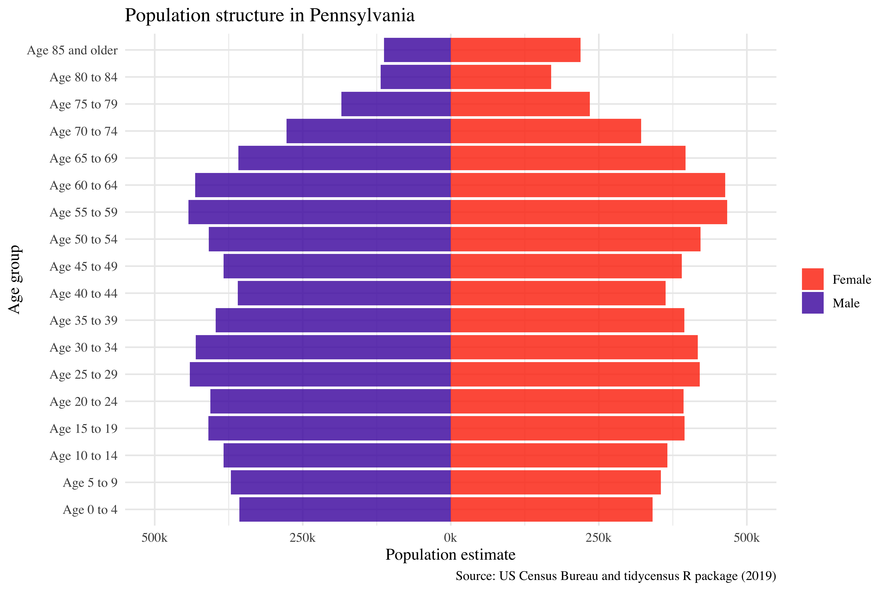
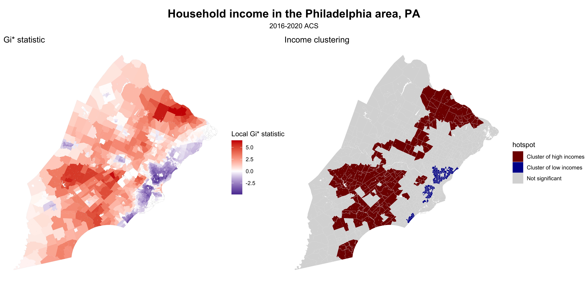
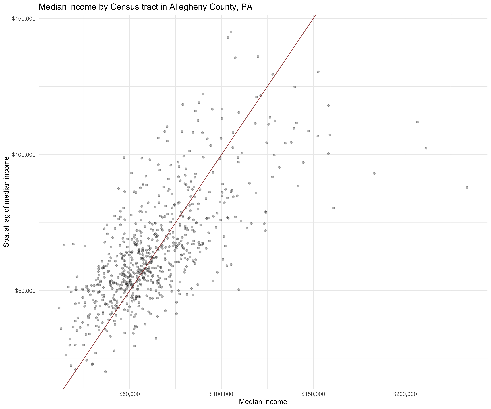

This chapter includes some of the early projections I developed when working through census data shorlty after starting at Penn State. Working through Walker's (2023) book Analyzing US Census Data: Methods, Maps, and Models in R, I familiarized myself with both with R and census data in Pennsylvania using recent ACS and census data. All analysis was performed in RStudio, with notable packages including ggplot, tmap, and ggbeeswam. Several of the outputs are shown below, with a couple from Pennsylvania as a whole including both the population pyramid and the point chart below, but also some of Philadelphia and Pittsburgh.
Pennsylvania
Philadelphia, PA
Moving to a closer look at Pennsylvania's two largest city, I've include several charts and maps detailing housing values, household income, and demographic characterstics across Philadelphia and Pittsburgh. A line chart, a beeswarm chart, and various measures of clustering are shown for Philadelphia below, while data on Pittsburgh is in the form of a density plot, a scatterplot, and various choropleth maps.

Pittsburgh, PA
